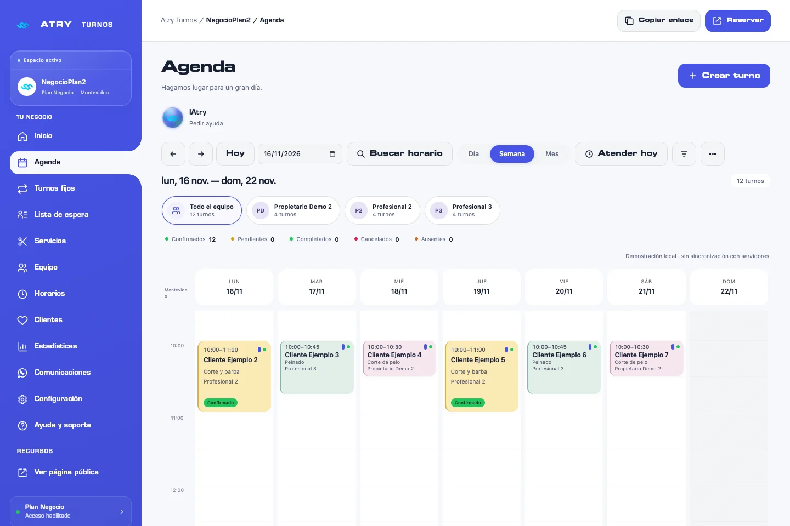
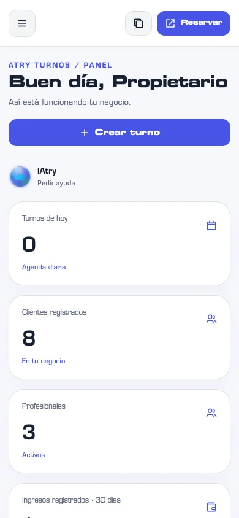

ATRY / TURNOS
ATRY / TURNOS
Tu negocio.
En su mejor versión.
Agenda, reservas y personas, en un mismo lugar. Con IAtry para acompañar la gestión y una experiencia que lleva tu identidad.
Descubrir ATRY Turnos

01 / ORGANIZACIÓNClientes, servicios y profesionales.
Una operación conectada.
02 / IATRYUn asistente contextual.
Ayuda en el momento indicado.
03 / TU IDENTIDADTu marca, tus colores.
En cualquier pantalla.